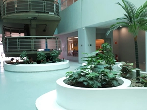

A Faculdade de Tecnologia da Baixada Santista Rubens Lara é um órgão estadual de ensino superior que oferece os cursos de Análise e Desenvolvimento de Sistemas, Ciência de Dados, Gestão Empresarial, Gestão Portuária, Gestão de Recursos Humanos, Logística, Sistemas para Internet, Processos Gerenciais AMS e Logística AMS.
Os cursos são concebidos, desenvolvidos e ministrados visando atender segmentos atuais e emergentes do mercado de trabalho. Os currículos são flexíveis, compostos por disciplinas de formação básica, tecnológica e específica, de acordo com a área de atuação do profissional a ser formado.
Estruturalmente, o ensino se apoia em projetos reais, estudo de casos e em laboratórios específicos, aparelhados para reproduzir as condições do ambiente profissional, permitindo ao futuro tecnólogo participar de forma inovadora nos vários trabalhos de sua área.
A Faculdade de Tecnologia da Baixada Santista, primeira faculdade pública de Santos, foi implantada inicialmente com o curso superior de Tecnologia em Processamento de Dados, com duas turmas de 40 alunos, funcionando nos períodos da manhã e da noite.
Com a construção de um novo prédio, também localizado em seu antigo endereço (Av. Bartolomeu de Gusmão, 110), a instituição passou a oferecer também o curso superior de Tecnologia em Informática com Ênfase em Gestão de Negócios (com 40 vagas semestrais, à tarde) e o curso superior de Tecnologia em Logística com Ênfase em Transportes (com 80 vagas semestrais, sendo 40 à tarde e 40 à noite).
longo dos anos, novas graduações foram criadas, e algumas das formações já oferecidas tiveram suas matrizes curriculares reestruturadas.
A partir do segundo semestre de 2019, a Fatec Rubens Lara passou a atender em novo endereço, estando agora localizada no Centro da cidade de Santos.
Promover a educação pública profissional e tecnológica dentro de referenciais de excelência, visando ao desenvolvimento tecnológico, econômico e social do Estado de São Paulo.
Acesse neste link o calendário semestral da FATEC Rubens Lara.
| Curso | Manhã | Tarde | Noite |
|---|---|---|---|
| Análise e Desenvolvimento de Sistemas | 25 | 25 | |
| Ciência de Dados | 25 | ||
| Gestão Empresarial | 20* | 25 | |
| Gestão Portuária | 25 | 25 | |
| Gestão de Recursos Humanos | 25 | ||
| Logística | 25 | ||
| Processos Gerenciais AMS | 25 | ||
| Sistemas para Internet | 25 |